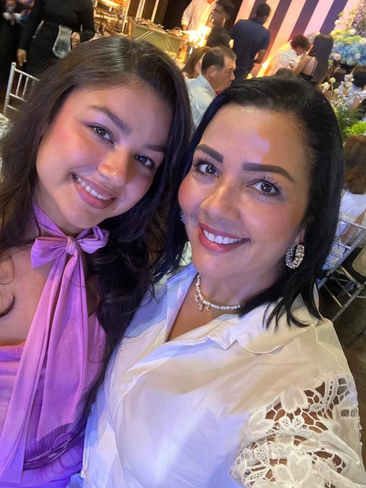

<title>Participación de Grado Luciana De la Rosa</title>
<link rel="preconnect" href="https://fonts.googleapis.com">
<link rel="preconnect" href="https://fonts.gstatic.com" crossorigin>
<link rel="stylesheet" href="https://fonts.googleapis.com/css2?family=Bodoni+Moda:ital,opsz,wght@0,6..96,400;0,6..96,500;1,6..96,400&family=IBM+Plex+Mono:wght@400;500&family=Jost:wght@300;400;500&display=swap">

<style>
  :root{
    --ink:        #0B0E13;
    --plate:      #151A22;
    --plate-top:  #1B212B;
    --line:       #2A333F;

    --rose-pale:  #FBDCE5;   /* rosa claro, arranque del degradé */
    --rose:       #F2B0C2;   /* rosa principal */
    --rose-deep:  #D2839C;   /* rosa apagado, para reglas y etiquetas */
    --gold:       #DFA88C;   /* oro rosado, para pistas y bordes */

    --paper:      #F6F1EE;
    --soft:       #DFD7D6;
    --muted:      #B6BEC7;

    --step--1: clamp(.76rem, .72rem + .2vw, .86rem);
    --step-0:  clamp(1rem,  .95rem + .32vw, 1.14rem);
    --step-1:  clamp(1.16rem, 1.05rem + .5vw, 1.38rem);
    --step-2:  clamp(1.5rem, 1.2rem + 1.4vw, 2.1rem);
    --step-3:  clamp(2.05rem, 1.35rem + 3.5vw, 3.9rem);
  }

  *{ box-sizing: border-box; }

  body{
    margin: 0;
    background: var(--ink);
    background-image:
      radial-gradient(120% 78% at 50% -12%, rgba(210,131,156,.20) 0%, rgba(210,131,156,0) 60%),
      radial-gradient(90% 60% at 50% 110%, rgba(223,168,140,.13) 0%, rgba(223,168,140,0) 66%);
    color: var(--paper);
    font-family: "Jost", "Avenir Next", "Segoe UI", system-ui, sans-serif;
    font-weight: 400;
    font-size: var(--step-0);
    line-height: 1.68;
    -webkit-font-smoothing: antialiased;
    padding: clamp(14px, 4vw, 56px) clamp(12px, 4vw, 40px) clamp(40px, 8vw, 88px);
    display: flex;
    justify-content: center;
  }

  /* ── Placa ─────────────────────────────────────────── */
  .plate{
    position: relative;
    width: 100%;
    max-width: 620px;
    overflow-wrap: break-word;
    background:
      linear-gradient(168deg, rgba(242,176,194,.07) 0%, rgba(242,176,194,0) 38%),
      linear-gradient(var(--plate-top), var(--plate) 42%);
    border: 1px solid var(--line);
    padding: clamp(34px, 7vw, 60px) clamp(20px, 6vw, 60px) clamp(30px, 6vw, 50px);
    box-shadow:
      0 1px 0 rgba(255,255,255,.045) inset,
      0 30px 70px -40px rgba(0,0,0,.9);
    display: flex;
    flex-direction: column;
    align-items: center;
    gap: clamp(20px, 3.6vw, 30px);
    text-align: center;
  }

  /* El ángulo se registra para poder animarlo; si el navegador no soporta
     @property, el degradé queda quieto en vez de romperse. */
  @property --ang{ syntax: "<angle>"; initial-value: 0deg; inherits: false; }

  .frame{
    position: absolute;
    inset: clamp(9px, 2.2vw, 17px);
    pointer-events: none;
    border: 1px solid rgba(223,168,140,.34);
  }

  /* Dos luces recorren el contorno en sentidos opuestos: una por el borde
     de la tarjeta y otra, más tenue, por el hilo interior. */
  .sweep{
    position: absolute;
    inset: -1px;
    padding: 1px;
    pointer-events: none;
    -webkit-mask: linear-gradient(#000 0 0) content-box, linear-gradient(#000 0 0);
            mask: linear-gradient(#000 0 0) content-box, linear-gradient(#000 0 0);
    -webkit-mask-composite: xor;
            mask-composite: exclude;
    animation: girar 9s linear infinite;
  }
  .plate > .sweep{
    background: conic-gradient(from var(--ang),
      transparent 0deg 190deg,
      rgba(210,131,156,.35) 258deg,
      var(--rose) 306deg,
      var(--rose-pale) 330deg,
      var(--rose) 344deg,
      transparent 360deg);
  }
  .frame > .sweep{
    background: conic-gradient(from var(--ang),
      transparent 0deg 214deg,
      rgba(223,168,140,.45) 286deg,
      var(--rose-pale) 322deg,
      transparent 352deg);
    animation-duration: 14s;
    animation-direction: reverse;
    opacity: .8;
  }
  @keyframes girar{ to{ --ang: 360deg; } }

  .frame::before, .frame::after,
  .via{ content: ""; position: absolute; width: 9px; height: 9px; border-radius: 50%;
        background: var(--plate); border: 1px solid var(--gold); }
  .frame::before{ top: -5px; left: -5px; }
  .frame::after{ top: -5px; right: -5px; }
  .via.bl{ bottom: -5px; left: -5px; }
  .via.br{ bottom: -5px; right: -5px; }

  /* ── Retrato ───────────────────────────────────────── */
  .portrait{
    margin: 0;
    position: relative;
    width: clamp(148px, 36vw, 186px);
    aspect-ratio: 3 / 4;
    border-radius: 999px 999px 8px 8px;
    overflow: hidden;
    border: 1px solid var(--gold);
    box-shadow: 0 0 0 5px rgba(242,176,194,.09), 0 18px 40px -26px rgba(0,0,0,.95);
    background: linear-gradient(165deg, rgba(242,176,194,.16), rgba(223,168,140,.05));
  }
  .portrait img{ width: 100%; height: 100%; object-fit: cover; display: block; }
  .portrait.empty::after{
    content: "Tu foto aquí";
    position: absolute; inset: 0;
    display: flex; align-items: center; justify-content: center;
    font-family: "IBM Plex Mono", ui-monospace, Menlo, monospace;
    font-size: var(--step--1);
    letter-spacing: .16em;
    text-transform: uppercase;
    color: var(--rose);
    background-image:
      repeating-linear-gradient(135deg, rgba(242,176,194,.10) 0 2px, transparent 2px 11px);
  }

  /* ── Tipografía ────────────────────────────────────── */
  .mono{
    font-family: "IBM Plex Mono", ui-monospace, "SF Mono", Menlo, monospace;
    font-size: var(--step--1);
    letter-spacing: .16em;
    text-transform: uppercase;
    color: var(--muted);
  }

  .institution{ display: grid; gap: .5em; }
  .institution .school{ color: var(--gold); letter-spacing: .2em; }
  .institution .kind{ color: var(--rose-deep); letter-spacing: .24em; }

  .lead{
    max-width: 32ch;
    margin: 0;
    color: var(--soft);
    font-size: var(--step-0);
    font-weight: 300;
  }

  .name{
    margin: 0;
    font-family: "Bodoni Moda", "Didot", "Times New Roman", serif;
    font-weight: 400;
    font-size: var(--step-3);
    line-height: 1.02;
    text-wrap: balance;
    color: var(--rose);   /* respaldo si el navegador no recorta el degradé */
  }
  .name .surname{ display: block; }
  @supports (background-clip: text) or (-webkit-background-clip: text){
    .name{
      background-image: linear-gradient(163deg,
        var(--rose-pale) 0%, var(--rose) 42%, var(--rose-deep) 100%);
      -webkit-background-clip: text;
      background-clip: text;
      color: transparent;
      -webkit-text-fill-color: transparent;
      filter: drop-shadow(0 8px 22px rgba(242,176,194,.22));
    }
  }

  .degree{
    margin: 0;
    font-family: "Bodoni Moda", "Didot", serif;
    font-style: italic;
    font-size: var(--step-2);
    color: var(--paper);
  }

  /* ── Pistas de circuito ────────────────────────────── */
  .trace{ width: min(100%, 420px); height: auto; display: block; overflow: visible; }
  .trace .t{ fill: none; stroke: rgba(223,168,140,.55); stroke-width: 1.4; stroke-linecap: round; stroke-linejoin: round; }
  .trace .pad{ fill: var(--plate); stroke: var(--gold); stroke-width: 1.4; }
  .trace .core{ fill: var(--rose); }
  .trace .flow{
    fill: none; stroke: var(--rose); stroke-width: 1.7; stroke-linecap: round;
    stroke-dasharray: 16 460; filter: drop-shadow(0 0 5px rgba(242,176,194,.6));
    animation: flow 5.5s cubic-bezier(.5,0,.5,1) infinite;
  }
  .trace .flow.b{ animation-delay: .35s; }
  @keyframes flow{
    0%   { stroke-dashoffset: 0;    opacity: 0; }
    12%  { opacity: 1; }
    72%  { opacity: 1; }
    100% { stroke-dashoffset: -230; opacity: 0; }
  }

  /* ── Año en código de resistencia ──────────────────── */
  .year{ display: grid; justify-items: center; gap: .85em; margin: 0; }
  .resistor{ width: 192px; height: auto; }
  .year figcaption{ color: var(--muted); }
  .year figcaption b{ color: var(--rose); font-weight: 500; }

  .closing{
    margin: 0;
    max-width: 34ch;
    font-family: "Bodoni Moda", "Didot", serif;
    font-style: italic;
    font-size: var(--step-1);
    line-height: 1.5;
    color: var(--rose);
    text-wrap: balance;
  }

  /* ── Detalles ──────────────────────────────────────── */
  .details{
    width: 100%;
    display: grid;
    gap: clamp(18px, 3.2vw, 26px);
    padding: clamp(20px, 4vw, 28px) 0;
    border-top: 1px solid var(--line);
    border-bottom: 1px solid var(--line);
  }
  @media (min-width: 520px){
    .details{ grid-template-columns: 1fr 1fr; text-align: left; }
    .details .item:last-child{ grid-column: 1 / -1; }
  }
  .item{ display: grid; gap: .45em; }
  .item dt{ color: var(--rose-deep); }
  .item dd{
    margin: 0;
    font-family: "Bodoni Moda", "Didot", serif;
    font-size: var(--step-1);
    line-height: 1.35;
    color: var(--paper);
    font-variant-numeric: tabular-nums;
  }
  .item dd small{
    display: block;
    font-family: "Jost", sans-serif;
    font-size: var(--step--1);
    color: var(--muted);
    margin-top: .4em;
  }

  .aside{ display: grid; justify-items: center; gap: .8em; }
  .aside .label{ color: var(--rose-deep); }
  .aside .host{
    margin: 0;
    font-family: "Bodoni Moda", "Didot", serif;
    font-style: italic;
    font-size: var(--step-1);
    color: var(--paper);
  }
  .note{ margin: 0; max-width: 36ch; color: var(--soft); font-size: var(--step-0); font-weight: 300; line-height: 1.75; }

  /* ── Botones ───────────────────────────────────────── */
  .btn{
    display: inline-flex; align-items: center; gap: .75em;
    padding: 1em 2.1em;
    border: 1px solid var(--rose);
    color: var(--rose);
    text-decoration: none;
    font-family: "IBM Plex Mono", ui-monospace, Menlo, monospace;
    font-size: var(--step--1);
    letter-spacing: .16em;
    text-transform: uppercase;
    background: transparent;
    transition: background .35s ease, color .35s ease, box-shadow .35s ease;
  }
  a.btn:hover, a.btn:focus-visible{
    background: var(--rose);
    color: #16121A;
    box-shadow: 0 0 34px -10px rgba(242,176,194,.85);
  }
  .btn .dot{ width: 6px; height: 6px; border-radius: 50%; background: currentColor; }
  .btn.pending{
    border-style: dashed;
    border-color: rgba(223,168,140,.55);
    color: var(--gold);
    cursor: default;
  }

  /* ── Conmigo siempre ───────────────────────────────── */
  .memoriam{
    width: 100%;
    display: grid;
    justify-items: center;
    gap: 1.15em;
    padding-top: clamp(4px, 2vw, 10px);
  }
  .memoriam .rule{ width: min(100%, 230px); height: auto; display: block; }
  .memoriam .rule line{ stroke: rgba(210,131,156,.45); stroke-width: 1; }
  .memoriam .rule circle{ fill: none; stroke: var(--rose); stroke-width: 1.2; }
  .memoriam > .mono{ color: var(--rose-deep); }
  .remembered{
    display: grid;
    gap: 1em;
    width: 100%;
    max-width: 400px;
  }
  @media (min-width: 460px){ .remembered{ grid-template-columns: 1fr 1fr; gap: 1.4em; } }
  .remembered p{ margin: 0; display: grid; gap: .3em; }
  .remembered .rel{ color: var(--muted); font-size: .74rem; letter-spacing: .18em; }
  .remembered .who{
    font-family: "Bodoni Moda", "Didot", serif;
    font-style: italic;
    font-size: var(--step-1);
    line-height: 1.3;
    color: var(--paper);
  }

  .signoff{ color: var(--muted); letter-spacing: .22em; }

  a:focus-visible, button:focus-visible{ outline: 2px solid var(--rose); outline-offset: 4px; }

  /* ── Entrada ───────────────────────────────────────── */
  .rise{ opacity: 0; transform: translateY(14px); animation: rise .95s cubic-bezier(.22,.68,.35,1) forwards; }
  @keyframes rise{ to{ opacity: 1; transform: none; } }
  .d1{animation-delay:.12s}.d2{animation-delay:.24s}.d3{animation-delay:.36s}.d4{animation-delay:.48s}
  .d5{animation-delay:.6s}.d6{animation-delay:.72s}.d7{animation-delay:.84s}.d8{animation-delay:.96s}
  .d9{animation-delay:1.08s}.d10{animation-delay:1.2s}

  @media (prefers-reduced-motion: reduce){
    .rise{ opacity: 1; transform: none; animation: none; }
    .trace .flow{ animation: none; opacity: .9; stroke-dasharray: none; }
    .sweep{ animation: none; opacity: .5; }
    .btn{ transition: none; }
  }
</style>

<main class="plate">
  <span class="sweep"></span>
  <div class="frame"><span class="sweep"></span></div>
  <span class="via bl"></span><span class="via br"></span>

  <header class="institution mono rise d1">
    <span class="school">Universidad del Norte</span>
    <span class="kind">Participación</span>
  </header>

  <p class="lead rise d2">Con la alegría de un camino que se cierra y otro que empieza, quiero compartir contigo el día en que recibo mi título</p>

  <h1 class="name rise d3">Luciana<span class="surname">De la Rosa Padilla</span></h1>

  <figure class="portrait rise d4">
    
  </figure>

  <svg class="trace rise d5" viewBox="0 0 400 40" role="presentation" aria-hidden="true">
    <path class="t" d="M 6 20 H 84 l 12 -12 H 164 l 12 12 H 188"/>
    <path class="t" d="M 394 20 H 316 l -12 12 H 236 l -12 -12 H 212"/>
    <path class="flow"   d="M 6 20 H 84 l 12 -12 H 164 l 12 12 H 188"/>
    <path class="flow b" d="M 394 20 H 316 l -12 12 H 236 l -12 -12 H 212"/>
    <circle class="pad" cx="6" cy="20" r="3.4"/>
    <circle class="pad" cx="394" cy="20" r="3.4"/>
    <circle class="pad" cx="200" cy="20" r="7"/>
    <circle class="core" cx="200" cy="20" r="2.4"/>
  </svg>

  <p class="degree rise d5">Ingeniera Electrónica</p>

  <figure class="year rise d6">
    <svg class="resistor" viewBox="0 0 220 60" role="img" aria-label="Una resistencia dibujada a línea con cuatro bandas; la primera y la tercera son del mismo tono, como los dos doses de 2026.">
      <defs>
        <clipPath id="barril">
          <rect x="58" y="14" width="104" height="32" rx="16"/>
        </clipPath>
      </defs>

      <g fill="none" stroke="var(--gold)" stroke-width="1.4" stroke-linecap="round">
        <line x1="14" y1="30" x2="58"  y2="30"/>
        <line x1="162" y1="30" x2="206" y2="30"/>
        <circle cx="10"  cy="30" r="3.2"/>
        <circle cx="210" cy="30" r="3.2"/>
      </g>

      <g clip-path="url(#barril)">
        <rect x="80"  y="14" width="6" height="32" fill="var(--rose-deep)"/>
        <rect x="98"  y="14" width="6" height="32" fill="var(--rose-pale)"/>
        <rect x="116" y="14" width="6" height="32" fill="var(--rose-deep)"/>
        <rect x="134" y="14" width="6" height="32" fill="var(--gold)"/>
      </g>

      <rect x="58" y="14" width="104" height="32" rx="16"
            fill="none" stroke="var(--gold)" stroke-width="1.4"/>
    </svg>
    <figcaption class="mono">Promoción <b>2026</b></figcaption>
  </figure>

  <p class="closing rise d7">Aunque sea a la distancia, cierras el circuito conmigo.</p>

  <dl class="details rise d8">
    <div class="item">
      <dt class="mono">Fecha</dt>
      <dd>Viernes 25 de septiembre<small>de 2026</small></dd>
    </div>
    <div class="item">
      <dt class="mono">Hora</dt>
      <dd>4:00 p.&nbsp;m.<small>Hora de Barranquilla (GMT-5)</small></dd>
    </div>
    <div class="item">
      <dt class="mono">Lugar</dt>
      <dd>Coliseo Universidad del Norte<small>Barranquilla</small></dd>
    </div>
  </dl>

  <div class="aside rise d9">
    <p class="mono label">Mi madre</p>
    <p class="host">Milena Padilla</p>
    <p class="note">Ella caminó conmigo cada semestre de esta carrera. Nada de esto habría pasado sin ella, y hoy quiere agradecerte por acompañarnos.</p>
  </div>
  <div class="aside rise d9">
      <p class="mono label">A la distancia</p>
      <p class="note">Si no puedes acompañarme en persona, quiero que estés igual:
      la ceremonia se transmite en vivo y ese día también cuentas.</p>
      <span class="btn pending">Enlace de transmisión pendiente</span>
  </div>

  <section class="memoriam rise d10">
    <svg class="rule" viewBox="0 0 230 14" role="presentation" aria-hidden="true">
      <line x1="0" y1="7" x2="103" y2="7"/>
      <line x1="127" y1="7" x2="230" y2="7"/>
      <circle cx="115" cy="7" r="4.5"/>
    </svg>
    <p class="mono">Conmigo siempre</p>
    <div class="remembered">
      <p><span class="mono rel">Mi abuelo</span><span class="who">Abel Padilla Manga</span></p>
      <p><span class="mono rel">Mi papá</span><span class="who">Manfred Von Lignau</span></p>
    </div>
    <p class="note">Mis ejemplos a seguir, mi motor, mi hombro en el que apoyarme, que aunque no están conmigo en persona, este título lleva su nombre y hoy celebran conmigo.</p>
  </section>

</main>
